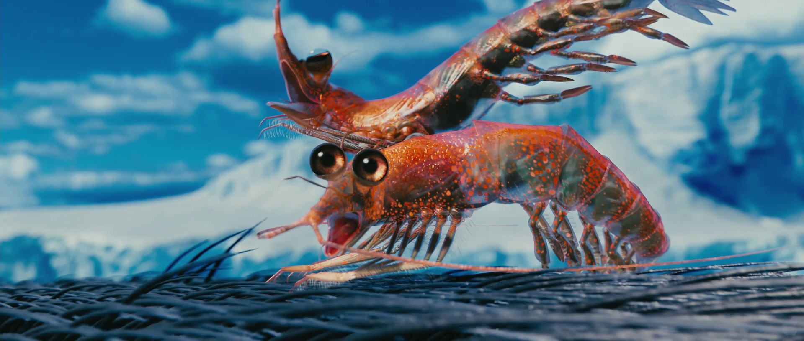

15.04.2021
Reprodukcja Homokryli
Reprodukcja homokryli to niesamowite zjawisko. Warto zacząć od tego że powstały one z inicjatywy Hryszko aka Szyszko. Wiadome jest iż mieszkają one w podwodnych oceanach i tam mieszkają. Ofc potrafią robić sztuczki magiczki takie jak skakanie z wody nad wodę i pod wodę. Otwierają mordki kiedy się reprodukują (chyba) o ile w ogóle to robią. Mamy dwie możliwości: 1. Reprodukują się jak inne rybo-podobne stworzenia 2. Hryszko wrzuca do kociołka menelixa dwa homokryle, zalewa je czystą i wychodzi 45 nowych Obstawiana jest bardziej opcja druga i raczej tak jest. Jeżeli chcecie homokrylka odezwijcie się do Szyszuni. Z wiarygodnych źródeł opłata za niego wynosi skrzynkę Soplicy.